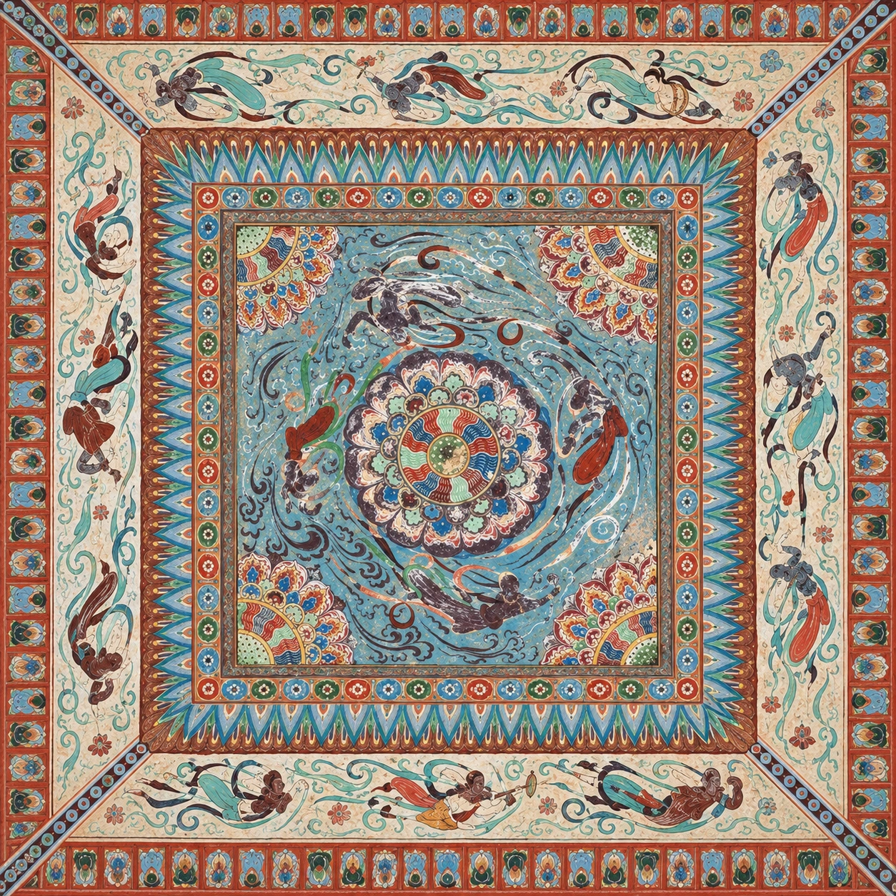

关于敦煌藻井，先从一眼喜欢开始DUNHUANG · CAVE 329

01 — LOOK CLOSER
先看完整，
再拆开每一处细节。
完整彩绘对位，七组浮雕构件逐层展开。
拖动环视，点击爆炸拆解，再触碰每一个组成部件。
莲花飞天藻井 · 立体设计演绎
正在构建立体藻井…
立体设计模型
完整形态 · 拖动环视 / 滚轮缩放
合拢展开
独立部件 · 真实厚度 · 动态光照
02 — PIECE THE SKY TOGETHER
把一方天空，
亲手拼回完整。
从衣带、花瓣与边饰的接续处寻找线索。
拖入画片，拼合完整的莲花飞天图案。
纹样拼合台 / RESTORATION STUDY3 × 3
拖动画片，或点选画片后点击空位
已归位画片0 / 9
DETAIL VIEW / 细节窗
点选一枚画片，放大观察它的线条与色彩。
从中央莲心开始，或试着接续外围的纹带。
使用与三维模型一致的参考重绘。此互动为图案观察练习。
04 — FROM CEILING TO EVERYDAY
一方藻井，
一枚随身香挂。
留下放射、回旋与层叠的关系。
将复杂的画面，转译成可触摸的日常。
设计提案 / CONCEPT OBJECT拟定尺寸约 70 × 70 mm · 材料与结构待打样验证
织物背袋
可替换香芯
纹样织绣面
LOTUS / EVERYDAY EDITION
把回旋的莲花
留在今天。
以井心的放射关系作简化练习，搭配织物面层、可替换香芯与挂带。它是一件正在形成的产品提案。
选择一组当代配色 青黛 · 米金
01 / 纹样织绣面
以十四瓣的放射节奏为起点，简化轮廓与色彩。这里展示设计推演，并非原纹样复刻。
THE SOURCE MATTERS
每一次转译，
都有来处。
原型选自敦煌莫高窟第329窟的莲花飞天藻井。敦煌研究院介绍，其井心由十四个卷瓣莲与十四朵卷云纹相间环绕，四身飞天围绕莲花，四角有四分之一团花，四披另有十二身伎乐飞天及层层边饰。
原型资料：敦煌研究院；公开图版：清华大学美术图书馆。主要展示为参考资料重绘与三维浮雕设计演绎，非高清扫描、实测复原或已投产商品。
阅读敦煌研究院原始资料 ↗